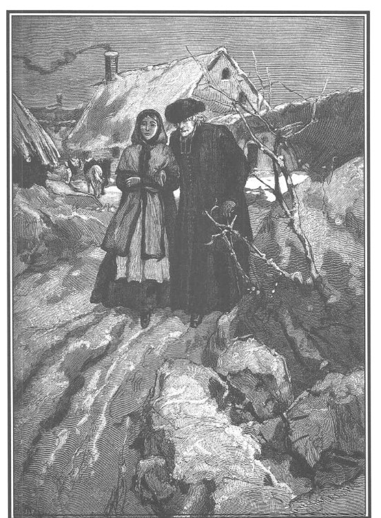

Trong khi Marie bận rộn với những công việc đồng áng, bà Georges và linh mục xứ Bouqueval, ngồi bên lò sưởi trong phòng khách nhỏ của trang trại, trao đổi về Marie, đề tài lúc nào cũng thú vị đối với họ, được họ rất quan tâm.
Ông linh mục già trầm tư, đầu cúi thấp, hai khuỷu tay chống trên đầu gối, hơ hai bàn tay run rẩy trên ngọn lửa.
Bà Georges bận rộn khâu vá, thỉnh thoảng nhìn cha xứ và ra vẻ chờ đợi cha trả lời.
Sau một lúc im lặng, cha nói:
– Con có lý đấy, Georges ạ, thế nào cũng phải báo cho ông Rodolphe thôi, nếu ông ấy hỏi Marie thì cháu nó sẽ vì hết sức biết ơn mà có thể thú nhận với ân nhân của nó điều mà nó giấu chúng ta.
– Có phải đúng như thế không, thưa cha? Vậy thì ngay tối nay con sẽ viết thư lập tức theo địa chỉ đã dặn, ở phố Gái Góa.
– Tội nghiệp con bé, lẽ ra nó phải thấy quá sung sướng chứ! Điều buồn phiền gì khiến nó héo hon như thế lúc này?
– Không có gì khiến nó khuây khỏa được nỗi buồn ấy, thưa cha, ngay cả khi nó ra sức chăm chú học hành cũng thế thôi.
– Nó quả là có những tiến bộ kỳ lạ, trong khoảng thời gian ít ỏi mà chúng ta dành cho việc học của nó, chăm sóc nó.
– Có phải không, thưa cha? Học đọc, học viết gần như thông thạo và đã ít nhiều biết tính toán để giúp con giữ sổ sách của trang trại. Và rồi, con bé thân yêu ấy, nó còn đỡ đần con, đảm đang đủ việc, khiến con vừa cảm động vừa ngạc nhiên và thán phục, mặc dù con không biết có phải nó đã gần như làm quá sức đến nỗi con phải lo cho sức khỏe của nó.
– Cũng may mà ông bác sĩ da đen ấy đã trấn an cho chúng ta sau khi bệnh ho nhẹ từng khiến chúng ta hoảng sợ không để lại hậu quả.
– Ông David ấy tốt thật, ông ấy quan tâm đến nó biết mấy! Lạy Chúa! Như tất cả những ai gần nó. Lạy Chúa trên cao! Ở đây mỗi người đều yêu mến và quý trọng nó. Điều đó có gì lạ, bởi nhờ những dự định hào hiệp và cao thượng của ông Rodolphe, người làm trong trang trại đều thuộc loại ưu tú trong số những người tốt nhất của vùng này! Ngay cả những kẻ thô bỉ nhất, những kẻ thờ ơ nhất cũng cảm thấy sức hấp dẫn của nết dịu hiền nửa thánh thiện, nửa e dè dường như luôn cầu xin tha thứ. Khổ thân con bé! Nó tưởng chỉ có mỗi mình nó tội lỗi.
Cha xứ, sau ít phút suy nghĩ, nói tiếp:
– Có phải con đã nói với ta rằng nỗi buồn của Marie bắt đầu từ khi bà Dubreuil, bà trại chủ của Công tước de Lucenay ở Arnouville lưu lại đây trong dịp lễ Phục sinh không?
– Vâng, thưa cha, con chú ý nhận thấy rằng ngay cả bà Dubreuil và nhất là con gái bà, cô Clara, mẫu hình của trong trắng, ngây thơ và nhân hậu, cũng đều như mọi người, chịu ảnh hưởng của Marie lôi cuốn. Cả hai người hằng ngày quấn quýt gắn bó với nó không rời, cha biết đấy, mỗi ngày Chủ nhật, bạn bè của chúng con ở Arnouville sang đây hoặc là chúng con lại qua bên ấy. Ấy vậy mà, mỗi cuộc thăm hỏi lại càng khiến đứa con yêu quý của con thêm u sầu cho dù Clara đã coi nó như em.
– Thực thế, bà Georges ạ, đấy là một điều bí ẩn lạ lùng, nguyên nhân của nỗi u buồn ấy là gì? Nó phải thấy sung sướng quá chứ, giữa cuộc sống hiện nay và trước kia có khác gì thiên đường và địa ngục? Ai dám ngờ là nó bội bạc được!
– Nó ấy à? Thượng đế vĩ đại vô cùng… Nó ấy à… nó tha thiết biết ơn công chăm sóc của chúng ta, ở nó, chúng ta vẫn thấy những bản năng tinh tế hiếm có kia mà! Con bé thật tội nghiệp, chẳng phải nó đã làm tất cả mọi việc để sống? Chẳng phải là nó đã cố gắng đền đáp xứng đáng với sự hậu đãi ân cần đối với mình đó sao? Nào đã hết, trừ những ngày Chủ Nhật, con ép nó phải chú ý ăn mặc cho ra dáng hơn để cùng con đi lễ chầu ở nhà thờ, thế mà nó chỉ muốn ăn mặc quần áo quê kệch như bọn con gái nhà nông. Tuy nhiên, ở nó vẫn thấy có mọi cái gì đó nổi hẳn, duyên dáng hơn, khiến cho nó trong những trang phục ấy vẫn cứ xinh, cứ đẹp, có phải không, thưa cha?
Cha xứ mỉm cười:
– Chà! Bà mẹ hãnh diện về con gái chưa kìa!
Nghe thấy vậy, bà Georges ứa nước mắt nghĩ đến đứa con trai của mình.
Cha xứ đoán được vì sao mà bà cảm động đến như thế:
– Hãy can đảm lên con ạ! Chúa đã cho con bé ấy đến đây để giúp con yên tâm chờ đợi cho đến lúc con tìm lại được đứa con trai của con và rồi đây một dây tình cảm thiêng liêng sẽ sớm nối con với Marie; một người mẹ đỡ đầu một khi đã hiểu nhiệm vụ của mình thì gần như là một bà mẹ thực thụ rồi còn gì! Còn với ông Rodolphe thì có thể nói rằng ông đã cho nó cuộc sống của tâm hồn từ ngày kéo nó lên khỏi vực thẳm cuộc đời. Ngay từ đầu, ông đã sớm hoàn thành nghĩa vụ của người cha đỡ đầu rồi đấy!
– Cha thấy nó đã đủ hiểu biết để cho nó được chịu thánh lễ mà con bé bất hạnh ấy chắc không hề được nhận chưa, thưa cha?
– Lát nữa khi ta sẽ cùng nó trở về nhà xứ, ta sẽ báo cho nó biết là lễ trọng có thể tiến hành trong vòng nửa tháng nữa thôi.
– Thưa cha, có thể một ngày nào đấy, Người sẽ làm chủ lễ cho một buổi lễ khác cũng vừa êm đềm, vừa nghiêm trang…
– Con định nói gì kia?
– Nếu cháu Marie được yêu mến như nó đã xứng đáng như thế, và nếu nó để ý một chàng trai nào đó trung hậu và lương thiện, thế thì tại sao nó lại không lấy chồng ạ?
Cha xứ lắc đầu buồn rầu:
– Gả chồng cho nó à? Con thử nghĩ xem! Thực tế buộc ta phải nói rõ hết tất cả cho ai muốn kết hôn với nó… và liệu có ai, dù cả cha và con bảo lãnh đi nữa, dám đương đầu với quá khứ đã làm ô uế tuổi thanh xuân của con bé thật đáng thương ấy không? Chẳng còn ai muốn lấy nó nữa!
– Nhưng ông Rodolphe hào phóng thế kia mà! Ông ấy sẽ lại còn cho con đỡ đầu nhiều hơn so với tất cả những gì trước kia đã làm nữa kìa! Một món hồi môn…
Cha xứ ngắt lời:
– Than ôi! Marie còn khổ hơn nếu chỉ mỗi một lòng ham của làm giảm bớt được tâm lý đắn đo, câu nệ ở những ai muốn cưới nó.
– Cha nói đúng thật, thưa cha! Như thế sẽ kinh tởm quá! Con bé sẽ vô phúc biết mấy!
Cha xứ trịnh trọng:
– Nó đã mắc nhiều tội lỗi, nó phải chuộc lại.
– Trời đất ơi, thưa với cha! Bị bỏ rơi từ tấm bé như thế, không biết bấu víu vào đâu, không còn biết dựa vào ai, gần như chẳng còn biết thế nào là thiện, thế nào là ác, bị sa vào con đường đồi bại mà nó đâu có muốn, làm sao nó không phạm tội được?
– Lương tri đạo lý lẽ ra phải nâng đỡ nó, cảnh tỉnh nó; thử hỏi nó đã có cố gắng thế nào để mà thoát khỏi số phận ấy chứ? Những linh hồn từ thiện ở Paris đâu hiếm?
– Không phải vậy đâu, thưa cha! Và cũng tất nhiên thôi! Biết tìm họ ở đâu kia chứ; trước lúc tìm ra được một người thì đã gặp biết mấy là khước từ, bao nhiêu là thờ ơ lãnh đạm; và đối với Marie, đâu phải là nó chỉ cần một sự bố thí nhất thời, nó chỉ cần một sự quan tâm liên tục để có thể tự mình lần hồi sống lương thiện mà thôi. Có thể có bao nhiêu bà mẹ sẽ rủ lòng thương xót nó, nhưng còn phải may mắn lắm mới gặp được nữa chứ! Chao ôi! Cha hãy tin là như vậy! Con đã từng nếm mùi nghèo khổ! Nếu không tình cờ được ơn trời phù hộ giống như sau này, than ôi, như ông Rodolphe đã biết đến Marie, dù là quá chậm đi nữa! Nếu không có những sự tình cờ như thế thì những người nghèo khổ, luôn luôn bị hắt hủi thô bạo ngay từ lúc mới mở miệng trình bày họ sẽ cho rằng lòng thương hại chẳng hề có, chẳng bao giờ gặp được và khi bị cái đói thúc giục… cái đói khẩn thiết, họ thường tìm thấy trong tội lỗi những phương tiện mà họ chẳng còn hy vọng tìm thấy ở lòng trắc ẩn.
Giữa lúc ấy Marie đi vào phòng khách.
Bà Georges ân cần:
– Cháu đi đâu về thế hả cháu?
– Thưa, cháu mới từ kho bảo quản hoa quả về ạ, thưa bà, sau khi đã đóng cửa sân nuôi gà, vịt. Quả cây được bảo quản tốt lắm ạ, ngoài một vài quả mà cháu đã loại và để riêng ra.
– Tại sao cháu không bảo chị Claudine làm việc ấy cho! Cháu làm làm gì cho thêm mệt, hả Marie?
– Không ạ, thưa không ạ, thưa bà, ở trong kho cháu thấy thích lắm ạ, mùi quả chín thơm dễ chịu lắm ạ.
– Thưa cha, dễ phải một ngày nào đó mời cha đến thăm kho bảo quản hoa quả của cháu Marie mới được. Cha không tưởng tượng nổi là cháu nó sắp xếp khéo như thế nào! Nó lấy những chùm nho mà ngăn riêng các loại quả khác nhau, các loại quả này lại còn được xếp riêng thành ngăn bằng rêu nữa kia.
– Ôi, thưa cha! Con tin rằng cha sẽ hài lòng. – Marie hồn nhiên nói. – Cha sẽ thấy rêu rất ăn màu với những quả táo chín đỏ, hay những quả lê màu vàng suộm. Nhất là những quả táo Api rõ xinh, vừa hồng vừa trắng, thật đẹp, trông cứ như là những hài đồng bụ bẫm trong ổ lót rêu xanh. – Cô gái nói thêm với niềm hứng khởi của người nghệ sĩ trước tác phẩm của mình.
Cha xứ tủm tỉm cười vừa nhìn bà Georges vừa bảo Marie:
– Ta phải mê khu vắt sữa do con cai quản đấy, con ạ. Bà nội trợ nào khó tính mấy cũng phải tị với con đấy! Sẽ có ngày ta đến thăm khu bảo quản hoa quả và những quả táo đỏ đẹp, những quả lê vàng và nhất là những quả táo “hài đồng” trong ổ rêu. Nhưng này, mặt trời sắp lặn hẳn rồi đấy, con chỉ còn đủ thời giờ dắt ta về nhà xứ và quay về nhà trước khi trời tối hẳn… Lấy áo choàng và đi thôi con ạ… Nhưng chà, bây giờ mới nhớ ra việc này… Trời lạnh quá đi mất… Con ở nhà thôi! Ai đó trong nhà tiễn chân ta cũng được.
Bà Georges can:
– Chao ôi, thưa cha, cha sẽ làm cháu nó buồn đấy. Mọi buổi chiều nó vẫn vui sướng vì được tiễn chân cha về kia mà.
– Thưa cha, – Marie ngước đôi mắt xanh, to rụt rè e thẹn nhìn cha xứ – con cứ tưởng là cha giận con điều gì nên cha không cho phép con tiễn chân Người như mọi khi kia.
– Ta ấy à? Con bé đáng thương chưa kìa! Thế thì nhanh nhanh lên con ạ, lấy áo đi và mặc cho ấm vào!
Marie vội vã khoác lên vai một tấm áo choàng có mũ trùm bằng len thô màu trắng viền nhung đen và đưa tay dắt cha xứ.
Ông bảo:
– Cũng may là không xa mấy, mà đường xa cũng an toàn.
Bà Georges cũng nói:
– Hôm nay muộn hơn mọi bữa đấy, Marie, cháu có muốn ai đấy trong trại cùng đi với cháu không?
Marie mỉm cười:
– Thiên hạ sẽ cười cháu là người hay nhát sợ, cháu cảm ơn bà, xin đừng vì cháu mà làm phiền người khác. Từ nhà mình đến khu nhà xứ không đến mười lăm phút đi bộ, cháu sẽ về trước khi trời tối.
– Ta không ép đâu, vì tạ ơn Chúa, chưa thấy ai nói là có kẻ gian lảng vảng ở xứ này cả.
– Nếu không thế thì cha chẳng phiền con bé thân yêu này nữa, dù rằng cha cần nó lắm đấy!

Marie tiễn cha xứ.
Chẳng mấy chốc, cha xứ rời trang trại, vịn vào tay Marie, và cô chầm chậm bước để ông già nặng nề, khó nhọc theo cho kịp.
Vài phút sau, cha xứ và Marie đi đến gần khúc đường trũng hai bên trồng cây, nơi Thầy Đồ, mụ Vọ và thằng Tập Tễnh mai phục.